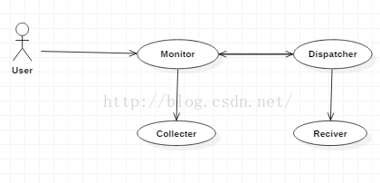
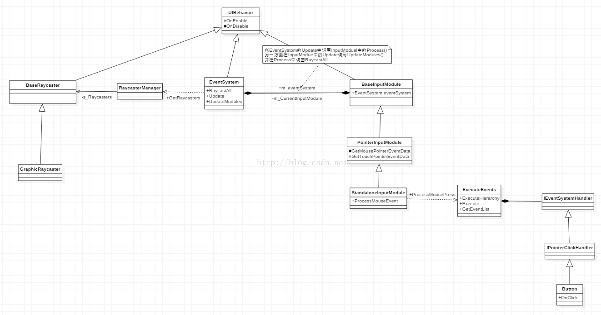
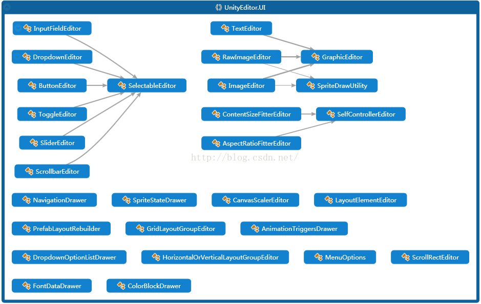
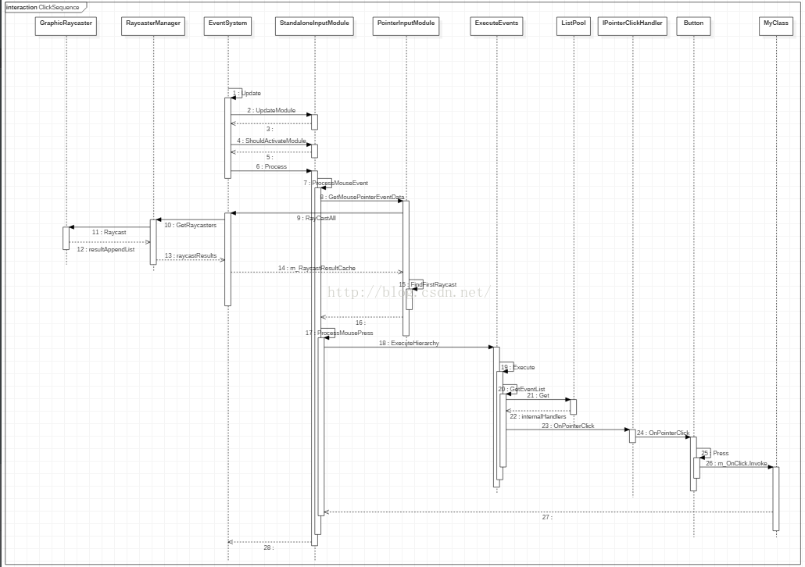

UGUI 事件体系分析
事件体系
事件体系总体上说由四部分组成，分别是：监测器，派发器，采集器，响应器。
监测器指的是Eventsystem类，它重写了MonoBehavior的update方法，会在每一帧更新挂载在同一个GameObject上的BaseInputModule组件状态，并判断是否应该激活Module，如果是，则去调用各个Module的Process。
派发器指的就是BaseInputModule，最常用的是它的子类StandaloneInputMoudle。它完成了实际的事件生成。包括且不限于：事件类型的确定，事件数据的收集，派发对象的过滤。其中对派发对象的获取需要借助采集器，但需要通过监测器来获取，这种设计可以带来效率上的优势，虽然实现时并没有相关的代码。
采集器是指BaseRaycaster,在UGUI中使用的是其子类GraphicRaycaster。当事件发生时，会由Module请求一个射线点触，返回所有能点到的物体并返回，交由派发器进行过滤。它有一个内部的管理类RaycasterManager，用来做链接采集器和监测器的单向桥梁。
响应器是指IEventSystemHandler及其子类，例如最常用的IPointerClickHandler，它处理的是点击事件。通过ExecuteEvents类，可以将发生事件的对象上所有的响应器都获取到并调用其响应逻辑。以点击为例，事件最终会被派发到OnClick的代理上。完成逻辑的执行。
这四个模块大致的依赖关系如下：

类图
类有好多，但相比于流程要简单不少。类分两部分，一部分是功能类，一部分是编辑器类。
功能类按照上一节的事件体系可以清晰的找到重要的基类，UML图如下：

这个图只是和点击相关的部分，当然还有很多其他的功能例如拖拽，滑动等等。
另一类是编辑器类，这个比较简单，我就没单独梳理类图，直接用VS自动生成的类图就够用了:

你若是觉得这些编辑器类没什么用，那你一定是对编辑器代码理解还不深。UGUI的编辑器界面还算获得了广泛的好评，当需要自定义Inspector界面时，一些功能一定用得上。
点击的逻辑流程
下面基于事件体系的划分，针对一次按钮点击梳理一下调用逻辑，流程图如下：

EventSystem 事件系统详细说明
一、EventSystem对象的说明
当我们在场景中创建任一UI对象后，Hierarchy面板中都可以看到系统自动创建了对象EventSystem，可以看到该对象下有三个组件：EventSystem、StandaloneInputModule、TouchInputModule，后面两个组件都继承自BaseInputModule。
EventSystem组件主要负责处理输入、射线投射以及发送事件。一个场景中只能有一个EventSystem组件，并且需要BaseInputModule类型组件的协助才能工作。EventSystem在一开始的时候会把自己所属对象下的BaseInputModule类型组件加到一个内部列表，并且在每个Update周期通过接口UpdateModules接口调用这些基本输入模块的UpdateModule接口，然后BaseInputModule会在UpdateModule接口中将自己的状态修改成'Updated'，之后BaseInputModule的Process接口才会被调用。
BaseInputModule是一个基类模块，负责发送输入事件（点击、拖拽、选中等）到具体对象。EventSystem下的所有输入模块都必须继承自BaseInputModule组件。StandaloneInputModule和TouchInputModule组件是系统提供的标准输入模块和触摸输入模块，我们可以通过继承BaseInputModule实现自己的输入模块。
除了以上两个组件，还有一个很重要的组件通过EventSystem对象我们看不到，它是BaseRaycaster组件。BaseRaycaster也是一个基类，前面说的输入模块要检测到鼠标事件必须有射线投射组件才能确定目标对象。系统实现的射线投射类组件有PhysicsRaycaster, Physics2DRaycaster, GraphicRaycaster。这个模块也是可以自己继承BaseRaycaster实现个性化定制。
总的来说，EventSystem负责管理，BaseInputModule负责输入，BaseRaycaster负责确定目标对象，目标对象负责接收事件并处理，然后一个完整的事件系统就有了。
另外，其实这些说明官方都有提供，这里也就是把英文译成了中文，并整理下。
官方文档在这里：
http://docs.unity3d.com/ScriptReference/EventSystems.EventSystem.html
二、UGUI中的事件系统
根据第一节中的说明，EventSystem和BaseInputModule是粘在一个对象上的，这两个模块在EventSystem对象上可以直接看到。那么，BaseRaycaster模块呢。。。
其实射线检测，肯定是从摄像机发起的，那么BaseRaycaster模块也一定和摄像机关系一定不简单。
对于UI模块，在Canvas对象下我们可以看到GraphicRaycaster组件。如果Canvas的渲染模式是SceenSpace-Overlay，那么我们是看不到Camera组件的。所以应该是GraphicRaycaster会对UI不同的渲染模式做特殊处理。
因为有GraphicRaycaster组件的原因，Canvas上的所有UI对象，都可以接受输入模块发出的事件，具体事件的处理在第四节说明。
三、场景对象中使用事件系统
场景中的非UI对象，如果想要接收输入模块的事件，一样的道理，也需要给摄像机挂上一个射线检测组件。PhysicsRaycaster, Physics2Draycaster这两个组件分别是用于3D和2D的场景。当然，还需要场景的对象挂了collider射线才检测的到。
其实官方对射线检测也是做了说明的，如果不详读手册是不会发现的，这里是传送门：
http://docs.unity3d.com/Manual/Raycasters.html
如果场景中只有一个射线检测源：When a Raycaster is present and enabled in the scene it will be used by the EventSystem whenever a query is issued from an InputModule.
如果场景中有多个射线检测源：If multiple Raycasters are used then they will all have casting happen against them and the results will be sorted based on distance to the elements.
四、响应事件
1、输入模块可以检测到的事件
StandaloneInputModule和TouchInputModule两个组件会检测一些输入操作，以事件的方式（message系统）通知目标对象，那么这两个组件支持的事件主要有以下：
- IPointerEnterHandler - OnPointerEnter - Called when a pointer enters the object
- IPointerExitHandler - OnPointerExit - Called when a pointer exits the object
- IPointerDownHandler - OnPointerDown - Called when a pointer is pressed on the object
- IPointerUpHandler - OnPointerUp - Called when a pointer is released (called on the original the pressed object)
- IPointerClickHandler - OnPointerClick - Called when a pointer is pressed and released on the same object
- IInitializePotentialDragHandler - OnInitializePotentialDrag - Called when a drag target is found, can be used to initialise values
- IBeginDragHandler - OnBeginDrag - Called on the drag object when dragging is about to begin
- IDragHandler - OnDrag - Called on the drag object when a drag is happening
- IEndDragHandler - OnEndDrag - Called on the drag object when a drag finishes
- IDropHandler - OnDrop - Called on the object where a drag finishes
- IScrollHandler - OnScroll - Called when a mouse wheel scrolls
- IUpdateSelectedHandler - OnUpdateSelected - Called on the selected object each tick
- ISelectHandler - OnSelect - Called when the object becomes the selected object
- IDeselectHandler - OnDeselect - Called on the selected object becomes deselected
- IMoveHandler - OnMove - Called when a move event occurs (left, right, up, down, ect)
- ISubmitHandler - OnSubmit - Called when the submit button is pressed
- ICancelHandler - OnCancel - Called when the cancel button is pressed
只要目标对象的mono脚本实现了以上接口，那么输入模块会将检测到的事件通过这些接口通知给目标对象。参考：http://docs.unity3d.com/Manual/SupportedEvents.html
如果你自定义了自己的输入模块，那么以上这些事件肯定是不能用的了。
2、接收输入事件的方式
1）、自行继承接口实现监听
在mono脚本中继承输入模块提供的事件接口，如下图。接口的定义方式也可以查下官方手册，http://docs.unity3d.com/ScriptReference/EventSystems.IBeginDragHandler.html这边有每一个接口的定义方式，放心大胆地点进去。另外，添加ObjChooseEvent组件的对象，一定要有Collider哦。
2）、通过EventTrigger组件监听事件
这是一个官方组件。在需要监听事件的对象上，挂上这个组件，然后在Inspector面板展开配置，你会看到这个组件提供了所有输入模块支持的事件类型的监听，如下图。

这种方式的优点是，当你选中一个你要监听的类型，你可以为这个事件类型添加多个监听接口，统一管理，可以清楚的知道到底哪些地方响应了这个事件呢。如果是继承Interface的方式，它将会分散在N个脚本里，一旦出现问题，那查起来一定会很酸爽。
但是这种通过配置的方式，一旦项目多人协作，项目的复杂度起来，这种拖来拽去的配置终究是会有很多问题的，比如某个组件删除，比如响应接口改了个名字~~都会导致配置丢失，而问题又不能及时发现。又或者程序的监听接口因为某些条件而不同。所以也许你会需要第三种方式。
3）、动态添加EventTrigger组件或者修改组件
其实http://www.cnblogs.com/zou90512/p/3995932.html这位同学的博客对这三种方法都做了很详细的说明。
只不过EventTrigger对外提供的接口不是很友好，导致我们需要添加一个监听，仿佛绕了N了山路弯弯，看着就心情不愉快……反而是这位博主后面说的Button的Click事件的实现方式有点意思……如果项目有需要，也许我们也可以这么做……
五、 EventSystem组件提供的一些有意思的接口
其实文档都有http://docs.unity3d.com/ScriptReference/EventSystems.EventSystem.html只是也许你没有注意。
点击EventSystem对象，你可以看到运行时候的一些详细数据：
变量：
firstSelectedGameObject：这个值可以在面板设置，如果你需要游戏在启动的时候自动选中某个对象，需要鼠标的那一下点击。
currentSelectedGameObject：当前选中的对象，你可以通过这个值判断当前是否鼠标点击在对象上，因为也许你有拖动摄像机的功能，但是你又不喜欢点击某些对象的时候这个功能又被响应，所以通过这个变量判断是一个很好的办法。
接口：
IsPointerOverGameObject：当前鼠标是否在事件系统可以检测的对象上。
SetSelectedGameObject：这个接口也许你会忽略，但是它很棒。因为你点击场景对象的时候，如果不调用这个接口，你的对象是收不到OnSelect事件的，currentSelectedGameObject的值也不会被设置的，必须在点击事件里调用这个接口设置选中对象！
Ex：
public void OnPointerClick (PointerEventData eventData )
{
print ("OnPointerClick..." );
currEvent.SetSelectedGameObject (gameObject );
}
不用在场景里找EventSystem对象，EventSystem组件有一个current静态变量，它就是你要的对象，直接EventSystem.current即可使用。
🔚